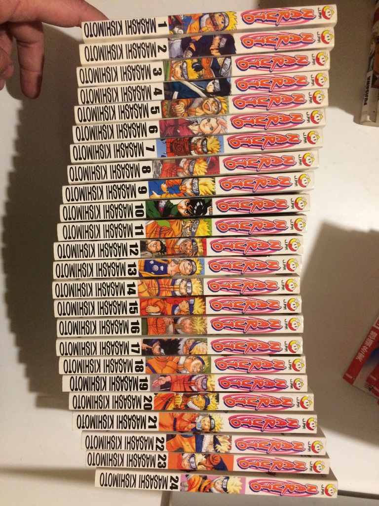
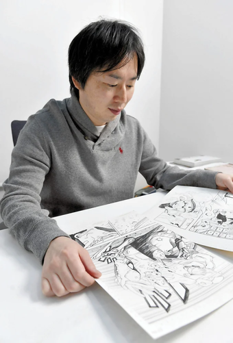

Naruto pojawił się po raz pierwszy w 43. numerze magazynu „Shūkan Shōnen Jump” wydawnictwa Shūeisha z roku 1999. Pierwsze 238 rozdziałów stanowi pierwszą część historii. Rozdziały od 4008 do 5016 tworzą poboczne historie. Wszystkie pozostałe stanowią drugą część, będącą kontynuacją historii po dwóch i pół latach.
Pierwszy tom został wydany w Japonii 3 marca 2000 roku, natomiast ostatni pojawił się na rynku 4 lutego 2015 roku.
Ponadto ukazały się ani-mangi bazujące na filmach pełnometrażowych, również wydane przez Shūeisha.
W Polsce Naruto zostało zlicencjonowane przez wydawnictwo mangowe Japonica Polonica Fantastica.
Manga została wydana także w Stanach Zjednoczonych przez Viz Media, we Włoszech przez Panini Comics, w Niemczech przez Carlsen Comics, we Francji przez wydawnictwo Kana, w Hiszpanii przez Glénat, a w Indonezji przez Elex Media Komputindo.
Długość i popularność serii jest porównywana do innej popularnej, nastawionej na akcję mangi typu shōnen autorstwa Akiry Toriyamy – Dragon Balla. Od powstania Naruto jego wielbiciele stworzyli wiele fanowskich stron internetowych, zawierających szczegółowe informacje, poradniki i fora dyskusyjne. Kilka pierwszych i najbardziej popularnych stron nakierowanych na anglojęzycznych odbiorców pojawiło się na krótko po tym, jak pierwszy angielski tom mangi ukazał się w lipcu 2003.

Masashi Kishimoto
(jap. 岸本 斉史 Kishimoto Masashi, ur. 8 listopada 1974 w Nagi) – japoński mangaka, znany przede wszystkim z serii mang Naruto.Masashi Kishimoto zadebiutował jako mangaka pracą Karakuri, która została wydana w 1996 roku nakładem wydawnictwa Shūeisha. Za tę mangę otrzymał nagrodę Hop Step Award, przyznawaną raz w miesiącu przez redakcję magazynu „Shūkan Shōnen Jump” i przeznaczoną dla debiutantów.
Kolejna manga autorstwa Kishimoto – Naruto, zadebiutowała 21 września 1999 w magazynie „Shūkan Shōnen Jump”. Wydawana była przez kolejne 15 lat, aż do 6 listopada 2014.
